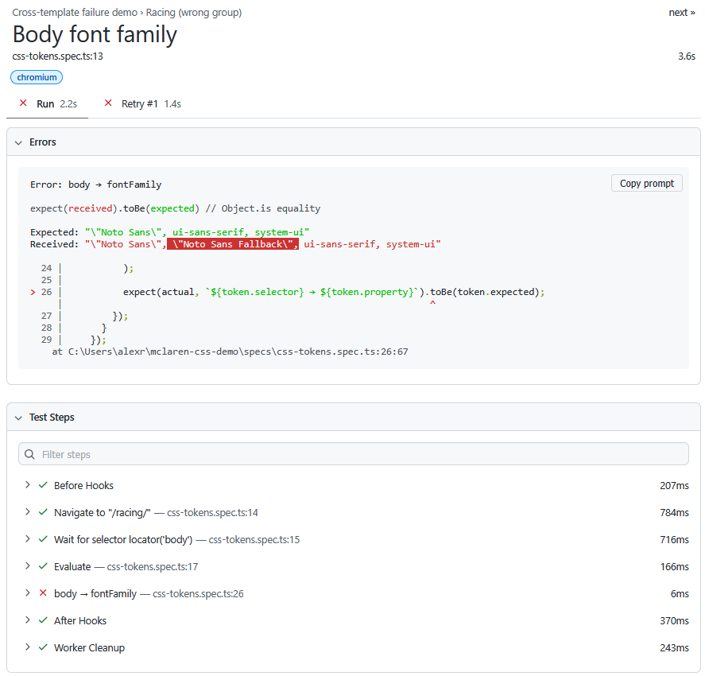

01Overview
McLaren's website spans multiple subdomains and templates. The cars subdomain (cars.mclaren.com) uses different CSS values to the main site (www.mclaren.com/racing). A deploy that accidentally applies the wrong template will pass functional tests but break the brand.
This suite provides two layers of protection:
- CSS token tests: read the computed styles the browser actually renders and compare them against a golden spec. Fast, deterministic, and precise to the pixel.
- Visual regression tests: take full-page snapshots and compare them against a baseline using AI. Catches layout shifts, image swaps, and anything the token tests do not cover.
Tech stack
Playwright TypeScript Applitools Eyes Ultrafast Grid Chromium Firefox Safari
02CSS Token Contracts
The key technique is getComputedStyle(): the browser's own API for reading what it actually rendered. This is more reliable than reading the stylesheet, as it reflects inherited values, overrides, and any runtime changes.
Tokens are defined once as a TypeScript object and reused across every page in that template group. The Artura, Artura Spider, 750S, and 750S Spider pages all share the same spec. The Racing pages share a separate spec because their token values are different.
The screenshot below shows what happens when the wrong spec is applied to the wrong page. In this case, the supercar token spec is being checked against the Racing page. All six token checks fail immediately with a clear message naming the property and the expected vs actual value.

Drilling into a single failure shows exactly what went wrong. The test expected the supercar font stack — "Noto Sans", ui-sans-serif, system-ui — but the Racing page returned "Noto Sans Fallback" as an additional entry. The difference is highlighted directly in the report.

Why this is useful as a quality gate
Token tests run in seconds and need no visual comparison or baseline image. They can be added to the CI pipeline on every pull request and will catch template regressions before they reach production.
03Visual Regression — Static Pages
One test run produces three results, one per browser, without the suite needing to navigate the page three times. This is the practical benefit of the Ultrafast Grid: cross-browser coverage at near the cost of a single-browser run.
The screenshot below shows the Applitools dashboard after a passing run. Three results are shown for "Artura full page": Firefox 150, Chrome 148, and Safari 26, all on a 1440x900 desktop viewport.

The first time a test runs there is no baseline to compare against. Applitools marks the result as New and somebody must review the snapshot in the Applitools dashboard and approve it as the benchmark. Only after that approval does the test become a live quality gate. On every subsequent run, Applitools compares the new snapshot against the approved baseline and flags any difference for review.
When a legitimate design change is made, the same process repeats: the test shows as Unresolved, a reviewer approves the new snapshot, and it becomes the updated baseline. This manual approval step is intentional. It ensures no visual change goes live without a sign-off, and it creates an audit trail of every approved state.
The second static test demonstrates ignore regions. The 750S hero image is swapped to a different image before the snapshot is taken. The ignore region excludes it from the diff, so the test passes — demonstrating that the rest of the page is stable even when one dynamic asset changes.
Why define ignore regions in code rather than the Applitools dashboard?
Ignore regions defined in the test file travel with the code. They appear in pull request reviews, they are version controlled, and they cannot be changed without a code change. Regions defined only in the dashboard are invisible to reviewers and can be modified silently.
04Dynamic Content — Animated Counters
The counters display Top Speed (330 km/h), Torque (720 nm), and Power (700 ps). When the section enters the viewport, each counter counts up from zero. The animation takes roughly one second.

The two-phase approach:
- Phase 1: wait until all counters show a non-zero value. This confirms the animation has started and the section is visible.
- Phase 2: poll every 300ms and compare the current values to the previous poll. When two consecutive polls match, the animation has finished.
Only then does Applitools take the snapshot. The result is always captured at the settled state — no flicker, no mid-animation frames.
Why not just add a fixed sleep?
A fixed delay such as waitForTimeout(2000) is fragile: too short on a slow network, too long on a fast one. The stability poll responds to the actual animation state rather than guessing how long it takes.